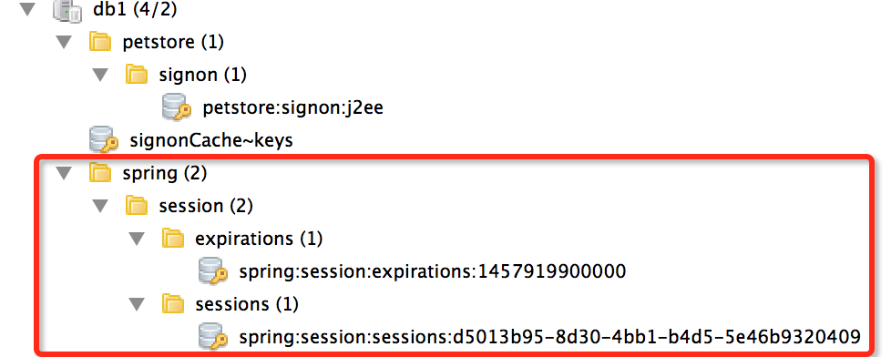

<!DOCTYPE HTML>
<html>
<head><meta name="generator" content="Hexo 3.9.0">
  <meta charset="utf-8">
  <meta http-equiv="X-UA-Compatible" content="IE=edge">
  <meta name="apple-mobile-web-app-capable" content="yes">
  <meta name="apple-mobile-web-app-status-bar-style" content="black">
  <meta name="google-site-verification" content>
  
  <title>【Spring】Redis的两个典型应用场景</title>
  <meta name="author" content="Emac">
   <meta name="description" content="Redis简介Redis是目前业界使用最广泛的内存数据存储。相比memcached，Redis支持更丰富的数据结构，例如hashes, lists, sets等，同时支持数据持久化。除此之外，Redis还提供一些类数据库的特性，比如事务，HA，主从库。可以说Redis兼具了缓存系统和数据库的一些特性">
  

  <meta property="og:title" content="【Spring】Redis的两个典型应用场景">
  <meta name="viewport" content="width=device-width, initial-scale=1, maximum-scale=1">
  <meta property="og:site_name" content="Emac">
 <meta property="og:image" content="undefined">
  
  <link href="/apple-touch-icon-precomposed.png" sizes="180x180" rel="apple-touch-icon-precomposed">
  <link rel="alternate" href="/atom.xml" title="Emac" type="application/atom+xml">
  <link rel="stylesheet" href="//cdn.bootcss.com/bootstrap/3.3.6/css/bootstrap.min.css">
  <link rel="stylesheet" href="//cdn.bootcss.com/font-awesome/4.5.0/css/font-awesome.min.css">
  <link rel="stylesheet" href="/css/m.min.css">
  <link rel="icon" type="image/x-icon" href="/favicon.ico">
</head>
</html>
<body>
  <div id='wx_pic' style='display:none;'></div>
  <div id="main">
    <div class="behind">
      <div class="back">
        <a href="/" class="black-color"><i class="fa fa-times" aria-hidden="true"></i></a>
      </div>
      <div class="description">
        &nbsp;拾贝
      </div>
    </div>
    <div class="container">
      

  <article class="standard post">
    <div class="title">
      
  
    <h1 class="page-title center">
        【Spring】Redis的两个典型应用场景
    </h1>
  


    </div>
    <div class="meta center">
      
<time datetime="2016-03-11T16:00:00.000Z">
  <i class="fa fa-calendar"></i>&nbsp;
  2016-03-12
</time>


    
    &nbsp;
    <i class="fa fa-tag"></i>&nbsp;
    <a href="/categories/backend/">backend</a>


    
    &nbsp;
    <i class="fa fa-tag"></i>&nbsp;
    <a href="/tags/原创/">原创</a>·<a href="/tags/Spring/">Spring</a>


    </div>
    <hr>
    <div class="picture-container">
      
    </div>
    <h2 id="Redis简介"><a href="#Redis简介" class="headerlink" title="Redis简介"></a>Redis简介</h2><p><a href="http://redis.io/" target="_blank" rel="noopener">Redis</a>是目前业界使用最广泛的内存数据存储。相比memcached，Redis支持更丰富的数据结构，例如hashes, lists, sets等，同时支持数据持久化。除此之外，Redis还提供一些类数据库的特性，比如事务，HA，主从库。可以说Redis兼具了缓存系统和数据库的一些特性，因此有着丰富的应用场景。本文介绍Redis在Spring Boot中两个典型的应用场景。</p>
<h2 id="场景1：数据缓存"><a href="#场景1：数据缓存" class="headerlink" title="场景1：数据缓存"></a>场景1：数据缓存</h2><p>第一个应用场景是数据缓存，最典型的当属缓存数据库查询结果。对于高频读低频写的数据，使用缓存可以第一，加速读取过程，第二，降低数据库压力。通过引入spring-boot-starter-redis依赖和注册RedisCacheManager，Redis可以无缝的集成进Spring的缓存系统，自动绑定@Cacheable, @CacheEvict等缓存注解。</p>
<p>引入依赖：</p>
<pre><code>&lt;dependency&gt;
    &lt;groupId&gt;org.springframework.boot&lt;/groupId&gt;
    &lt;artifactId&gt;spring-boot-starter-redis&lt;/artifactId&gt;
&lt;/dependency&gt;
</code></pre><p>Redis配置（application.properties）:</p>
<pre><code># REDIS (RedisProperties)
spring.redis.host=localhost
spring.redis.password=
spring.redis.database=0
</code></pre><p>注册RedisCacheManager：</p>
<pre><code>@Configuration
@EnableCaching
public class CacheConfig {

    @Autowired
    private JedisConnectionFactory jedisConnectionFactory;

    @Bean
    public RedisCacheManager cacheManager() {
        RedisCacheManager redisCacheManager = new RedisCacheManager(redisTemplate());
        return redisCacheManager;
    }

    @Bean
    public RedisTemplate&lt;Object, Object&gt; redisTemplate() {
        RedisTemplate&lt;Object, Object&gt; redisTemplate = new RedisTemplate&lt;Object, Object&gt;();
        redisTemplate.setConnectionFactory(jedisConnectionFactory);
        // 开启事务支持
        redisTemplate.setEnableTransactionSupport(true);
        // 使用String格式序列化缓存键
        StringRedisSerializer stringRedisSerializer = new StringRedisSerializer();
        redisTemplate.setKeySerializer(stringRedisSerializer);
        redisTemplate.setHashKeySerializer(stringRedisSerializer);
        return redisTemplate;
    }

}
</code></pre><p>@Cachable, @CacheEvict使用，Redis中的存储结构可参见场景2中的配图：</p>
<pre><code>@Cacheable(value=&quot;signonCache&quot;, key=&quot;&apos;petstore:signon:&apos;+#username&quot;, unless=&quot;#result==null&quot;)
public Signon findByName(String username) {
    return dao.fetchOneByUsername(username);
}

@CacheEvict(value=&quot;signonCache&quot;, key=&quot;&apos;petstore:signon:&apos;+#user.username&quot;)
public void update(Signon user) {
    dao.update(user);
}
</code></pre><ul>
<li>@Cacheable: 插入缓存<ul>
<li>value: 缓存名称</li>
<li>key: 缓存键，一般包含被缓存对象的主键，支持Spring EL表达式</li>
<li>unless: 只有当查询结果不为空时，才放入缓存</li>
</ul>
</li>
<li>@CacheEvict: 失效缓存</li>
</ul>
<blockquote>
<p>Tip: Spring Redis默认使用JDK进行序列化和反序列化，因此被缓存对象需要实现java.io.Serializable接口，否则缓存出错。</p>
<p>Tip: 当被缓存对象发生改变时，可以选择更新缓存或者失效缓存，但一般而言，后者优于前者，因为执行速度更快。</p>
<p>Watchout! 在同一个Class内部调用带有缓存注解的方法，缓存并不会生效。</p>
</blockquote>
<h2 id="场景2：共享Session"><a href="#场景2：共享Session" class="headerlink" title="场景2：共享Session"></a>场景2：共享Session</h2><p>共享Session是第二个典型应用场景，这是利用了Redis的堆外内存特性。要保证分布式应用的可伸缩性，带状态的Session对象是绕不过去的一道坎。一种方式是将Session持久化到数据库中，缺点是读写成本太高。另一种方式是去Session化，比如Play直接将Session存到客户端的Cookie中，缺点是存储信息的大小受限。将Session缓存到Redis中，既保证了可伸缩性，同时又避免了前面两者的限制。</p>
<p>引入依赖：</p>
<pre><code>&lt;dependency&gt;
    &lt;groupId&gt;org.springframework.session&lt;/groupId&gt;
    &lt;artifactId&gt;spring-session-data-redis&lt;/artifactId&gt;
&lt;/dependency&gt;
</code></pre><p>Session配置：</p>
<pre><code>@Configuration
@EnableRedisHttpSession(maxInactiveIntervalInSeconds = 86400)
public class SessionConfig {
}
</code></pre><ul>
<li>maxInactiveIntervalInSeconds: 设置Session失效时间，使用Redis Session之后，原Boot的server.session.timeout属性不再生效</li>
</ul>
<p>Redis中的session对象：</p>
<p></p>
<h2 id="小结"><a href="#小结" class="headerlink" title="小结"></a>小结</h2><p>上面结合示例代码介绍了数据缓存，共享Session两个Redis的典型应用场景，除此之外，还有分布式锁，全局计数器等高级应用场景，以后在其他文章中再详细介绍。</p>
<h2 id="参考"><a href="#参考" class="headerlink" title="参考"></a>参考</h2><ul>
<li><a href="http://docs.spring.io/spring-data/redis/docs/current/reference/html/" target="_blank" rel="noopener">Spring Data Redis</a></li>
<li><a href="http://jinnianshilongnian.iteye.com/blog/2001040" target="_blank" rel="noopener">Spring Cache抽象详解</a></li>
<li><a href="http://docs.spring.io/spring-session/docs/current/reference/html5/#httpsession-redis" target="_blank" rel="noopener">HttpSession with Redis</a></li>
</ul>


  </article>
  </script>
    <script async src="https://dn-lbstatics.qbox.me/busuanzi/2.3/busuanzi.pure.mini.js">
  </script>
  <div class="busuanzi center">
    页阅读量:&nbsp;<span id="busuanzi_value_page_pv"></span>&nbsp;・&nbsp;
    站访问量:&nbsp;<span id="busuanzi_value_site_pv"></span>&nbsp;・&nbsp;
    站访客数:&nbsp;<span id="busuanzi_value_site_uv"></span>
  </div>


    </div>
  </div>
  <footer class="page-footer"><div class="clearfix">
</div>
<div class="right-foot container">
    <div class="firstrow">
        <a href="#top" >
        <i class="fa fa-arrow-right"></i>
        </a>
        © emacoo.cn 2015-2020
    </div>
    <div class="secondrow">
        <a href="https://github.com/gaoryrt/hexo-theme-pln">
        
        </a>
    </div>
</div>
<div class="clearfix">
</div>
</footer>
  <script src="//cdn.bootcss.com/jquery/2.2.1/jquery.min.js"></script>
<script src="/js/search.js"></script>
<script type="text/javascript">

// comments below to disable loading animation
function revealOnScroll() {
  var scrolled = $(window).scrollTop();
  $(".excerpt, .index-title, .index-meta, p").each(function() {
    var current = $(this),
      height = $(window).outerHeight(),
      offsetTop = current.offset().top;
    (scrolled + height + 50 > offsetTop) ? current.addClass("animation"):'';
  });
}
$(window).on("scroll", revealOnScroll);
$(document).ready(revealOnScroll)

// disqus scripts


// dropdown scripts
$(".dropdown").click(function(event) {
  var current = $(this);
  event.stopPropagation();
  $(current).children(".dropdown-content")[($(current).children(".dropdown-content").hasClass("open"))?'removeClass':'addClass']("open")
});
$(document).click(function(){
    $(".dropdown-content").removeClass("open");
})

// back to top scripts
$("a[href='#top']").click(function() {
  $("html, body").animate({ scrollTop: 0 }, 500);
  return false;
});


var path = "/search.xml";
searchFunc(path, 'local-search-input', 'local-search-result');

</script>

</body>
</html>
